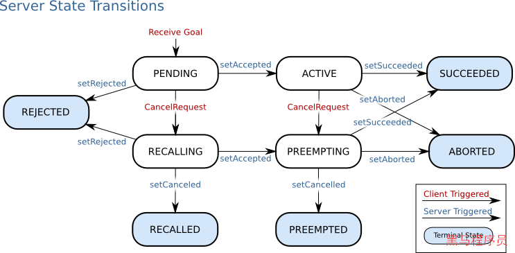
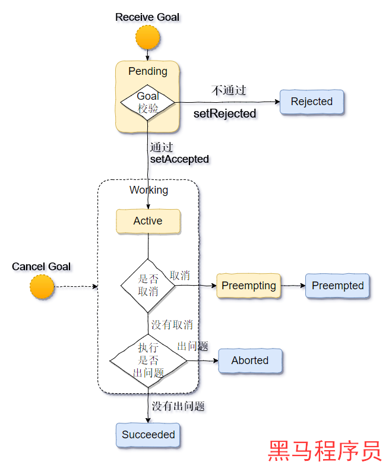

SimpleAction存在的问题
SimpleAction 的不足¶
SimpleActionServer负责处理client端发送的Goal指令，在这个过程中，存在一些缺陷:
- 在同一个时间内，只能处理一个Goal指令。
- 如果在一个Goal指令没有执行完成时，有新的Goal指令到达，将取消当前的Gaol指令，执行新的Goal的。
这一缺陷，导致在开发过程中，SimpleActionServer不能处理并发操作。
SimpleAction与Action¶
我们前面学习了SimpleActionServer和SimpleActionClient，通过学习了这两个类的使用，我了解到了action的通讯机制。
接下来我们要学习的是ActionServer和ActionClient，他们是能够解决SimpleAction的不足的。
其实SimpleAction是Action的简化版本，他将Action的复杂逻辑给隐藏了，给了一个最简易版本给我们使用，这个简易版本的不足就是不可以同时处理多个Goal。这种不足是设计出来的，并不是不可规避的。
Action状态机制¶
在Action通讯过程中，server端之所以能做很复杂的逻辑而不出现状况，是因为有一套完备的状态管理机制，让每个环节做到可控。
官方给出了以下的示例图：

总共来说，提供了9种状态来管理Action通讯的整个过程。
9种状态官方都提供了说明:
| 状态 | 值 | 描述 |
|---|---|---|
| PENDING | 0 | The goal has yet to be processed by the action server |
| ACTIVE | 1 | The goal is currently being processed by the action server |
| PREEMPTED | 2 | The goal received a cancel request after it started executing and has since completed its execution (Terminal State) |
| SUCCEEDED | 3 | The goal was achieved successfully by the action server (Terminal State) |
| ABORTED | 4 | The goal was aborted during execution by the action server due to some failure (Terminal State) |
| REJECTED | 5 | The goal was rejected by the action server without being processed, because the goal was unattainable or invalid (Terminal State) |
| PREEMPTING | 6 | The goal received a cancel request after it started executing and has not yet completed execution |
| RECALLING | 7 | The goal received a cancel request before it started executing, but the action server has not yet confirmed that the goal is canceled |
| RECALLED | 8 | The goal received a cancel request before it started executing and was successfully cancelled (Terminal State) |
| LOST | 9 | An action client can determine that a goal is LOST. This should not be sent over the wire by an action server |
我们将官方示意图做了一个流程上简化示意，方便大家来思考：

接下来，我们主要围绕这张图来掌握ActionServer和ActionClient的构建。